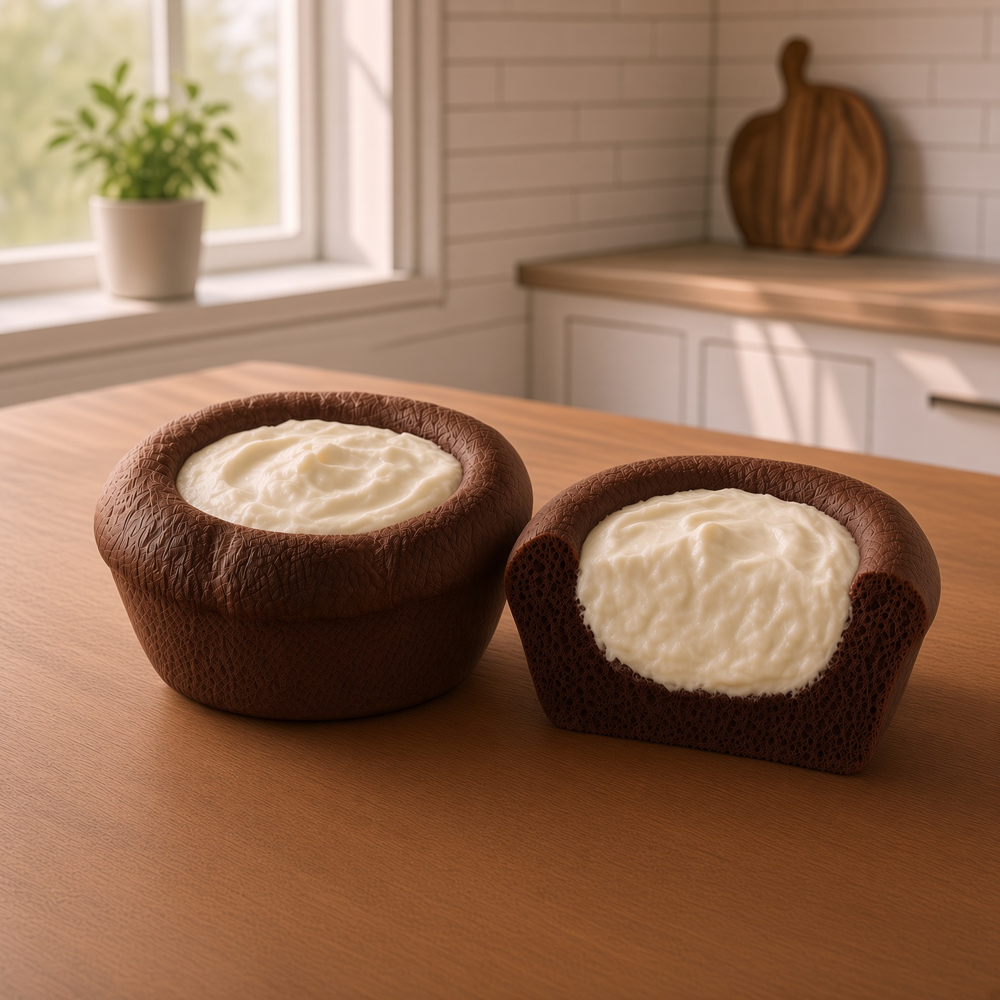
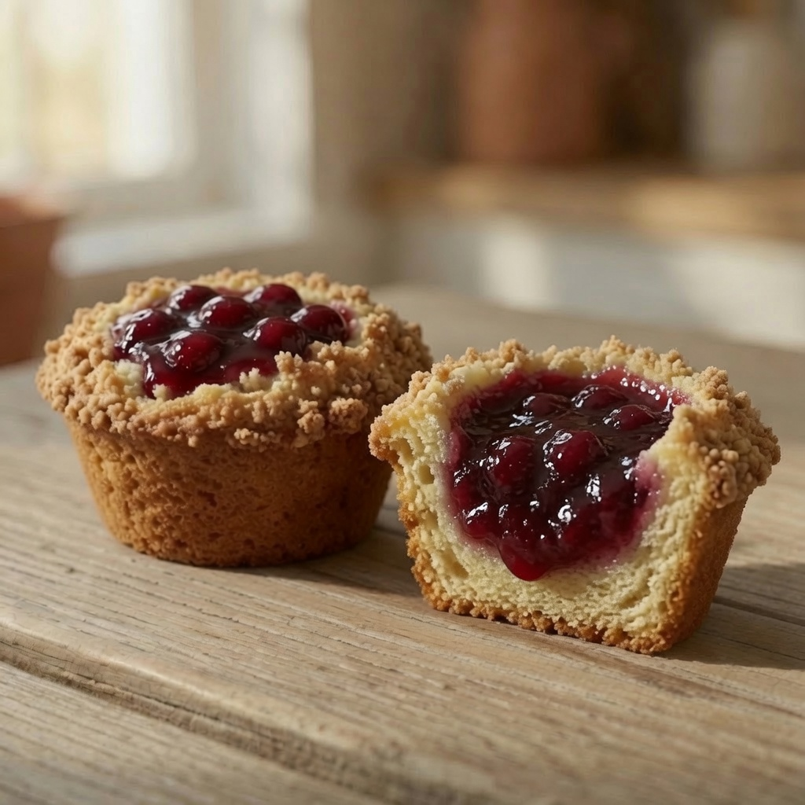
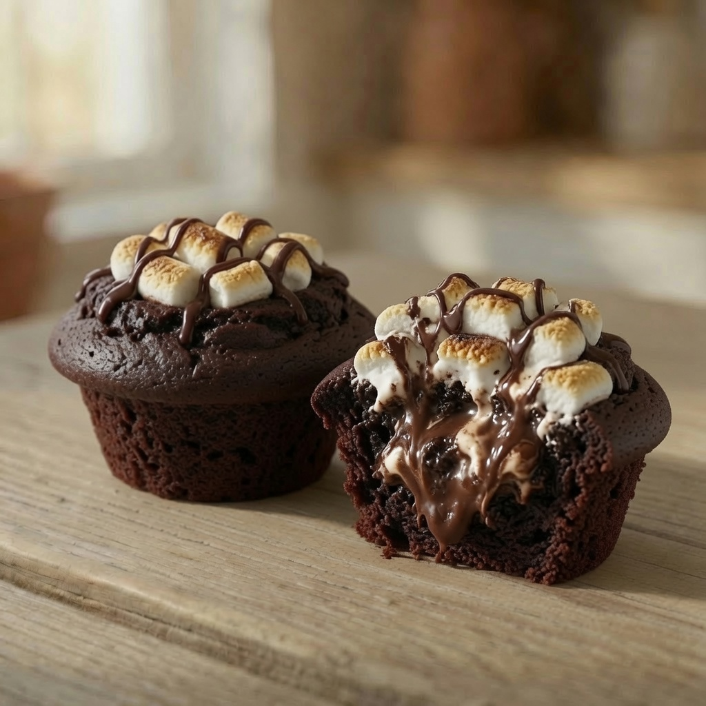
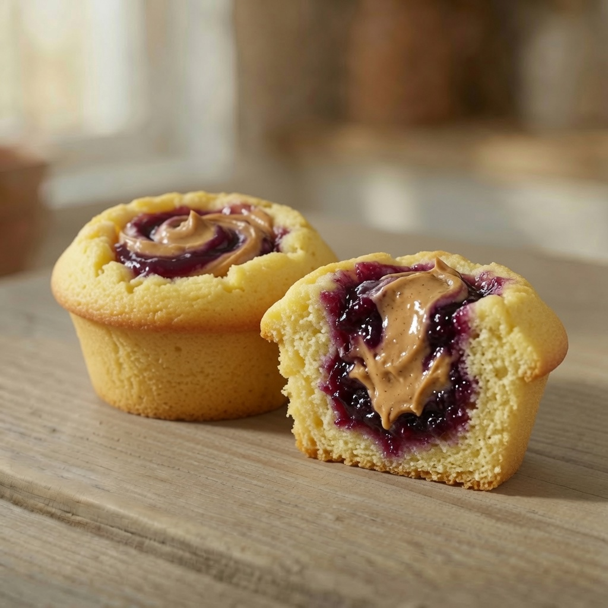
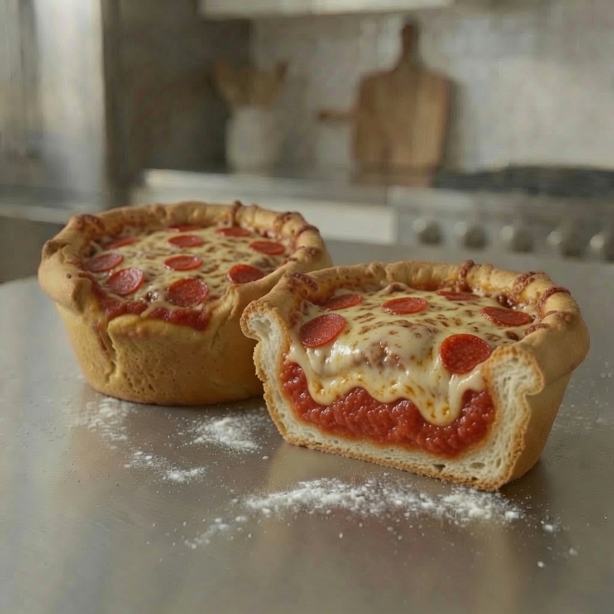
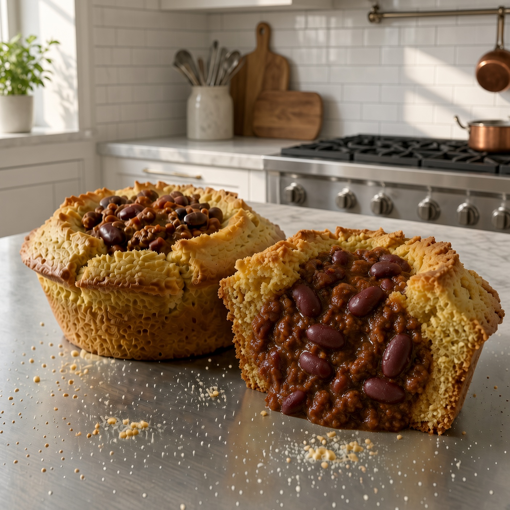
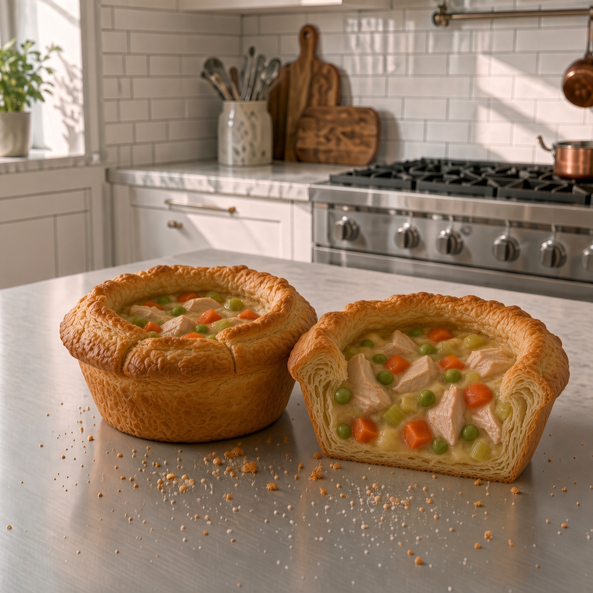
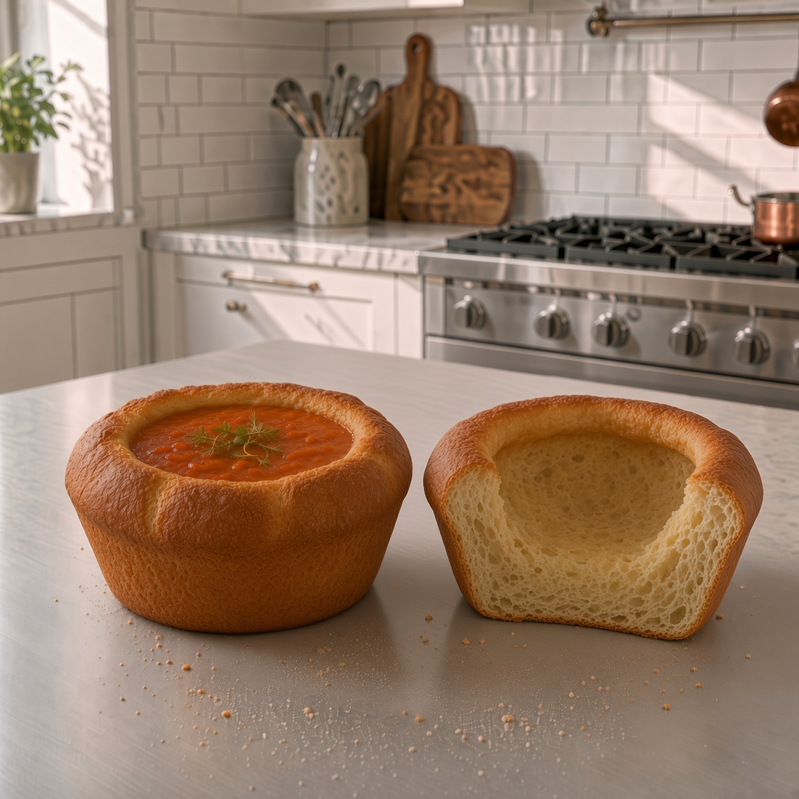

Sweet or savory, standard or personal — a few ideas to get you started. Every recipe uses the same simple system: place, insert, bake.








PocketCakes for cupcakes and muffins. PocketPies for pizzas and pot pies.
Shop PocketPans